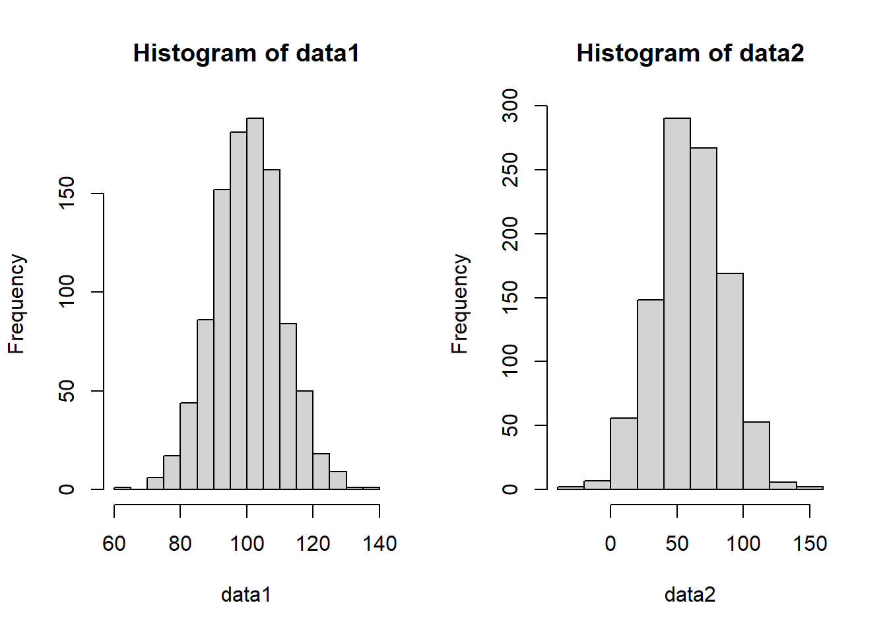

Chapter 1 Unit 1: The Basics
1.1 Week 1: Intro to R, data types, data structures
1.1.2 Data Types
Data is defined as “facts and statistics collected together for reference or analysis.” This is from the internet and needs to be our words As seen in Figure 1.1, there are two types of data: quantitative and qualitative. Quanitative data are able to be expressed in numerical format and are countable. These data are either discrete or continuous…
1.2 Week 2: Plotting Data
1.2.1 Normal Distributions
First we’ll generate a normal distribution with the rnorm() function. This takes 3 arguments: n, mean, sd, which you can see filled in below. While we could print out a list of all these values, it’s not easy to understand a list of numbers
normal_dist <- rnorm(n = 100, ## 100 samples
mean = 10, ## with a mean of 10
sd = 1 ## and a standard deviation of 1
)
normal_dist## [1] 8.346100 8.649020 9.987020 10.499397 10.397306 11.062404 10.309260
## [8] 10.381302 10.890750 7.698089 10.989495 10.290098 10.993880 8.972121
## [15] 11.061651 10.332380 10.144272 11.093168 8.575113 10.119710 10.248629
## [22] 10.210088 12.086883 10.836807 9.290734 9.823997 9.522466 11.276935
## [29] 9.165405 10.550194 8.313463 10.914374 9.087373 8.989635 10.752610
## [36] 9.843457 10.458252 11.728818 10.681699 9.314066 10.053595 10.762485
## [43] 9.167486 10.548800 10.687324 9.889948 10.589951 9.689793 10.806441
## [50] 8.497890 8.371323 11.213885 11.023949 9.564357 12.475143 9.374551
## [57] 9.455458 10.020276 9.316703 9.761230 9.723335 8.968686 10.533146
## [64] 10.350615 8.933822 10.076724 9.748426 11.022175 9.240201 11.042219
## [71] 10.334400 9.250375 9.970865 11.000627 9.476267 10.496223 10.515002
## [78] 11.583087 10.074339 9.995727 8.571759 12.037772 9.643108 10.759074
## [85] 10.723287 10.650248 10.671886 10.208314 10.281487 10.998582 9.342311
## [92] 10.722476 10.324829 9.222152 10.725546 9.771766 8.328675 10.277643
## [99] 9.092791 8.138671Another better way to look at data would be to visualize or plot it. One way to to that is with a histogram, which groups continuous values into bins, then plots the frequency for each bin.
In R, we use the hist() function to plot a histogram of data. We can (try to) control the number of bins with the breaks argument, but note that it doesn’t always match up. The hist() function will adjust based on the distribution of the data.
hist(normal_dist,breaks = 5)
Another way to visualize this would be with a d
1.2.2 What is normal?
1.2.2.1 Quantitative summaries
5num summary * Min, 25th percentile, median, 75th percentile, Max
tab_normal_dist <- summary(normal_dist)We can print the table in R by calling its name.
tab_normal_dist## Min. 1st Qu. Median Mean 3rd Qu. Max.
## 7.698 9.366 10.229 10.080 10.724 12.475Mean, standard deviation
1.2.2.2 Meaningful Comparisons
How to compare apples to oranges? Standardize the units / standardize the data
data1 <- rnorm(n=1000,
mean = 100,
sd = 10)
data2 <- rnorm(n=1000,
mean = 60,
sd = 25)Are these the same distribution?
Any issues??
layout(matrix(1:2, ncol = 2))
hist(data1)
hist(data2)
total_range <- range(data1, data2)Are they the same?
layout(matrix(1:2, ncol = 2))
hist(data1, xlim = total_range)
hist(data2, xlim = total_range)
Numerically / tabularly
Often times its important to tables of summary statistics
norm_comp_tab <- rbind(summary(data1),
summary(data2))
norm_comp_tab## Min. 1st Qu. Median Mean 3rd Qu. Max.
## [1,] 59.56415 93.13170 99.67909 99.51359 105.92513 134.5895
## [2,] -15.74402 42.63895 59.62234 59.41336 76.77487 136.3092Making the table a little nicer. Also an example of conditional programming.
rownames(norm_comp_tab) ## they're null## NULLif(is.null(rownames(norm_comp_tab))){
rownames(norm_comp_tab) <- c("data1", "data2")
}When working with Rmarkdown we can take advantage of knitr and pandoc to nice looking tables even easier.
knitr::kable(norm_comp_tab)| Min. | 1st Qu. | Median | Mean | 3rd Qu. | Max. | |
|---|---|---|---|---|---|---|
| data1 | 59.56415 | 93.13170 | 99.67909 | 99.51359 | 105.92513 | 134.5895 |
| data2 | -15.74402 | 42.63895 | 59.62234 | 59.41336 | 76.77487 | 136.3092 |
How transform the data
Simple transformation (multiply all values by 100) * to convert units * other examples?
Complex transformations * log-transformation (DEE: not a fan) * z-scores (DEE: a better option)
Why transform the data? * Real world applications? * Is it always appropriate to transform data?
1.5 Week 5:
For now, I have 3 main chapters for each of the main sections: * Basics of data science / R 1 * Applications/critiques using IPUMS data 8 * Student-driven projects 9
Each of these Chapters contains multiple sections. We’ll likely want to break these sections out into their own .Rmd files as they get fleshed out. For now, I’ll try to keep the abundance of files limited.
NOTE: As these actually get filled out, we will probably want to insert different parts to the book (EG, the content of Unit 1 is covered in Part I).
* Declare parts with # (PART) Part I {-} immediately before the first chapter # it contains.
Topics to include: * What is data? * Everything can be data * How do we interpret data * Tables * Plots * Univariate distributions * What can they tell us * Multi-modality in distributions * Categorical vs continuous data * Don’t need to get ahead of this yet * Add in a grouping category - multi state/multi-national dataset * Ttest / anova
Type of Data: Age distributions Specifically generate a dataset with old/young folks over-represented to highlight a bimodal distribution
Start with single state/country Add a second state/country to demo ttest Add more to demo anova
Alternatively, income by education level - may be more interesting/relevant to college students (or depressing)